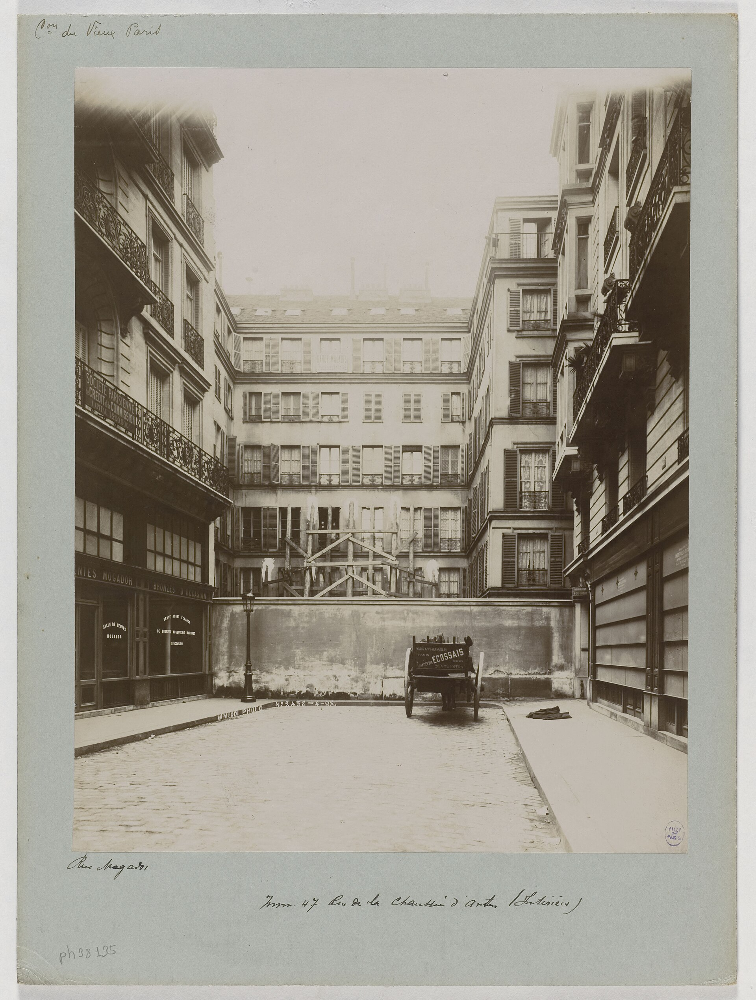

Chapter 18
The Bankruptcy of the Compagnie Universelle
On 15 February 1889, a court-appointed liquidator registered his authority over the Compagnie Universelle du Canal Interocéanique at the Tribunal de la Seine. The document listed the company’s assets: excavations, machinery, buildings, rails, dredges, hospitals. On the same date, the agent of the contractor Couvreux & Hersent at Panama City cabled Paris that work on the Culebra Cut had stopped. The steam shovels were idle. The workforce had not been dismissed. It had scattered.
The liquidator’s writ ran in Paris. The isthmus answered to no one.
The contrast was administrative, not metaphorical. In Paris, a legal procedure governed by the Commercial Code produced documents: inventories, notices to creditors, schedules of claims. In Panama, the procedure met the physical fact that the company’s principal asset was a ditch of uncertain dimensions cut through unstable shale, flooded by rainfall it could not control, and served by machinery designed for a sea-level canal that the company had formally abandoned in 1887. The machinery was still on the ground. The company still listed it as an asset. The ground did not agree.
The bankruptcy arrived through a sequence of specific defaults, each documented, each triggering the next. The first was to Couvreux & Hersent, the contracting firm that had built much of the Suez Canal’s earthworks. The company owed the firm for work completed under contract. The firm owed its laborers. The laborers were on the isthmus. The company’s treasury was in Paris. The distance between them was the distance between a payment authorization and a cable transfer and a payroll office and a man with a shovel. When the authorization did not arrive, the transfer could not be made. When the transfer could not be made, the payroll office closed. When the payroll office closed, the man with a shovel walked away.
The sequence took weeks. By late January 1889, the directors knew that the December bond issue had failed to generate sufficient subscriptions to cover obligations falling due in February. The ledger showed the gap. The gap was arithmetic, not a forecast. The company had X francs in available funds. It owed Y francs to contractors, suppliers, and bondholders. Y exceeded X. The difference was addition and subtraction, not engineering uncertainty or geological surprise.

The ledger had been the instrument by which the company knew itself. Now the ledger became the instrument by which the court knew the company. In the company’s annual reports, the ledger had been a tool of persuasion. It demonstrated progress, solvency, momentum.
It converted excavation tonnage into evidence of future completion. It converted bond subscriptions into evidence of public confidence. In the liquidator’s hands, the same ledger became evidence of something else. It showed the dates of subscription, the dates of expenditure, the dates of payment default. It showed that the company had raised capital by selling lottery bonds and had spent that capital on operations that produced no revenue. It showed that the gap between income and outflow had been closed, repeatedly, by issuing new bonds rather than by completing the canal. The ledger that had projected solvency now recorded its absence. The same numbers, read differently, told a different story.
The liquidator’s inventory was an act of translation. It translated a canal company into a bankruptcy estate. The translation was imperfect.
The estate included the Culebra Cut, where excavation had reached a depth that the company’s engineers had measured and the company’s critics had disputed. It included the hospital at Colón, which still functioned, and the hospital at Panama City, which still functioned. It included the Panama railroad, purchased in 1881 for a sum that exceeded its stock market valuation. It included locomotives, rails, dredges, steam shovels, tugboats, barges, warehouses, machine shops, and the housing settlements at Empedrado, Bas Obispo, and Matachín.
The inventory listed these items. It did not list their condition. It did not note that the dredges in the Chagres floodplain had been submerged repeatedly and that their boilers showed corrosion. It did not note that the steam shovels at Culebra had been maintained by a workforce that was now leaving. It listed assets. The ground listed nothing.
The French government’s role shifted in the same weeks. Until February 1889, the government’s posture had been what the company’s critics called distant encouragement and what the company’s directors called neutrality. The Republic had not guaranteed the company’s bonds. It had not invested in the company’s shares. It had not sent inspectors to the isthmus. It had permitted the company to issue lottery bonds, a financial instrument normally reserved for state debt, on the grounds that the canal was a work of public utility. This permission was the government’s principal material contribution. It had cost nothing. It had enabled everything.
When the company suspended payments, the posture became untenable. The lottery bonds had been sold to approximately 800, 000 French citizens. The figure was the company’s own, published in its subscription reports. The bondholders were not professional investors. They were schoolteachers, postal workers, shopkeepers, and retired military officers who had purchased 100-franc or 500-franc bonds on the expectation that the lottery drawing would redeem their investment at a premium. They were the same demographic that had purchased government rentes. They were the Republic’s own fiscal base. When the company defaulted, the bondholders became a constituency. The constituency could not be ignored.
The government appointed a liquidator. The appointment was an admission, not a rescue. It meant that the state acknowledged the company could not meet its obligations and that no private arrangement among creditors was possible. It transferred the company’s fate from the stock exchange to the courts. It also transferred the political question from the Ministry of Public Works to the Chamber of Deputies. The bondholders wanted to know why the lottery bonds had been permitted. They wanted to know why the annual reports had represented the work as advancing. They wanted to know why the company had been allowed to issue new bonds when the old bonds had not funded completion. These questions were addressed to the government. The government had no answers that did not implicate itself.
The counter-explanation was ready. It had been ready since 1882, when the first principal engineer, Armand Reclus, resigned. The Panama project was objectively beyond the engineering and medical capacity of the 1880s. The sea-level canal required the removal of more material than any excavation in human history. The Culebra Cut alone required the removal of rock that was harder, more fractured, and more unstable than the surveys of 1879 had indicated. The Chagres River flooded annually, and no containment structure existed. Yellow fever and malaria killed workers at rates that made sustained labor impossible. The hospital at Colón recorded the deaths. The mortality rate exceeded 200 per month during peak seasons. These facts were not in dispute. They had been reported by the company’s own medical staff.
The counter-explanation was true. It was also insufficient. The engineering and medical difficulties explained why the canal was not finished. They did not explain why the company was permitted to sell bonds for a project it could not finish. They did not explain why the annual reports represented the work as solvable and advancing. They did not explain why the lottery bond issues continued after the company’s own engineers had concluded that the sea-level design was impossible and that a lock canal was necessary. The difficulties were real. The decision to convert those difficulties into evidence of progress was a decision. People made it. Documents recorded it. The liquidator’s inventory could list the machinery. It could not list the decision.
The bankruptcy exposed the gap between the company’s public accounts and the isthmian reality. The public accounts had shown a company with assets, with progress, with a plan. The liquidator’s inventory showed assets whose value was uncertain.
The Culebra Cut was an excavation of a certain depth and length, but its dimensions had been measured by engineers responsible for producing figures that justified continued expenditure. The inventory accepted the measurements. The ground did not.
The cut was filled with water in places where the drainage pumps had stopped. The pumps had stopped because the pump attendants had not been paid. The attendants had not been paid because Couvreux & Hersent had not received the company’s payment. The company had not made the payment because the December bond issue had failed. The December bond issue had failed because the market had finally refused to absorb another lottery offering.
The market’s refusal was the event the company’s financial architecture had been designed to survive. It had not survived.
The architecture had been simple. The company sold lottery bonds. The bonds paid interest at a rate below the market rate for conventional debt. The bonds were redeemable at a premium through a lottery drawing. The lottery drawing was conducted publicly. The premium was large enough to attract subscribers who would not have purchased a conventional bond. The structure converted a civil engineering project into a mass-market financial product.
The product was sold through post offices and subscription offices in every department of France. Agents who received a commission sold it. The commission was paid from the bond proceeds.
The structure required continuous issuance. Each bond issue funded operations. Operations produced visible activity. Visible activity supported the annual report. The annual report supported the next bond issue.
The circuit was self-sustaining until the market refused. When the market refused, the circuit broke.
There was no reserve, because the structure had been designed to convert every franc of revenue into expenditure. The expenditure was the canal. The canal was not finished. The revenue was gone.
The liquidator’s task was to identify what remained. What remained was physical: a cut, a railroad, machinery, buildings, land. What remained was also legal: contracts, concessions, the agreement with the Republic of Colombia. The concession required the company to complete the canal within a specified period. The period had been extended once. The extension was expiring. The Colombian government had signaled that it would not extend again. The liquidator inherited the deadline. He also inherited the relationship between the company and its contractors. Couvreux & Hersent had a claim. The suppliers of rails and dredges had claims. The suppliers had shipped materials to the isthmus on the company’s orders. The materials were on the ground. They were listed in the inventory. The claims against the company exceeded the value of the materials.
The liquidator’s report did not resolve the claims. It categorized them. The categories were: secured creditors, unsecured creditors, bondholders, and shareholders. The bondholders were the largest category by number. The shareholders were the smallest. The shareholders had invested in 1880 and 1881, when the company was formed. Their shares had declined in value as the company issued more bonds. The bonds were debt. The shares were equity. In bankruptcy, debt had priority over equity. The bondholders would receive a fraction of their investment. The shareholders would receive nothing. The report made this clear. It was a legal document. It was also a political document. It told 800, 000 bondholders that they would lose money.
The loss was not uniform. The lottery bond structure had meant that some bondholders had already been redeemed at a premium through earlier lottery drawings. Those bondholders had received more than their principal. They had been paid from the proceeds of later bond issues. The later bondholders had not been redeemed. They held bonds that were now worth a fraction of their face value. The structure had transferred wealth from later subscribers to earlier ones. This was the design. The design was not hidden. It was described in the bond prospectus. The prospectus was a legal document. It disclosed the lottery terms. It did not disclose the company’s engineering assessments. It did not disclose the mortality rate. It did not disclose the gap between excavation completed and excavation required. The prospectus disclosed what the law required. The law required the lottery terms. The law did not require the engineering data.
The bankruptcy proceedings were conducted in Paris. The isthmus was represented by the inventory. The inventory was a list.
The list did not convey that the hospital at Colón was still admitting yellow fever patients. It did not convey that the wards were staffed by nurses who had not been paid. It did not convey that medical supplies were running low because suppliers had stopped shipments pending payment.
The inventory listed the hospital as an asset. The hospital was an asset. It was also a facility still in use.
Its use was not the company’s decision. The disease did not recognize the bankruptcy. The mosquitoes bred in the standing water that the company’s drainage systems had failed to clear. The drainage systems had failed because the pumps had stopped. The pumps had stopped because the company had defaulted.
The bankruptcy and the disease were connected. The connection was the company’s financial architecture. The architecture had funded the hospital. The architecture had also funded the excavation that created the standing water. The standing water bred the mosquitoes. The mosquitoes carried the fever. The fever filled the hospital.
The hospital was an asset. The standing water was a liability. The inventory listed one. It did not list the other.
The liquidator’s appointment produced a specific consequence for the workforce. The workforce had been composed of laborers recruited from the Caribbean, engineers and technicians from France, and local Panamanian workers. The laborers were paid by the contractors. The engineers were paid by the company. When the company stopped paying the contractors, the contractors stopped paying the laborers. The laborers departed. The engineers waited. Some waited for weeks. They expected the company to resolve its difficulties. The company had resolved difficulties before. It had issued new bonds. It had continued operations. The engineers’ expectation was based on experience. The experience was no longer relevant. The company could not issue new bonds. The market had refused. The pattern had been: difficulty, bond issue, continuation. The pattern was now: difficulty, no bond issue, liquidation.
The departure of the workforce was not organized. It was not managed. The company’s agents on the isthmus had no instructions. The liquidator in Paris had no authority over the workforce. His authority extended to assets. The workforce was not an asset. The workforce was a cost. When the cost could not be paid, the workforce dissolved. The dissolution was documented in the company’s employment registers. The registers showed names, dates of hire, dates of departure. The dates of departure clustered in February and March 1889. The registers did not show where the workers went. Some returned to their islands. Some went to Colón. Some went to Panama City. Some are not traceable.
The liquidator’s inventory listed the machinery. The machinery included steam shovels manufactured by Marion and Bucyrus in the United States. The company had purchased them for the Culebra Cut. The shovels were designed for heavy rock excavation. They had been shipped to the isthmus in pieces, assembled on site, and operated by trained crews. The crews had departed. The shovels remained.
The inventory listed them as assets. Their value as assets depended on their condition. Their condition depended on maintenance. Maintenance depended on labor. Labor depended on payment. Payment had stopped. The shovels would deteriorate. The inventory did not record deterioration.
It recorded presence. The shovels were present. They would be present in the next inventory. They would be present in the inventory taken by the American canal commission fifteen years later. The Americans would find the shovels where the French had left them. Some would be usable. Most would not. The inventory in 1889 listed them as assets. The ground listed them as scrap.
The bankruptcy proceedings produced a series of legal documents. The court order appointing the liquidator was the first. The notice to creditors was the second. The inventory was the third.
The schedule of claims was the fourth. Each document was dated. Each was filed. Each was a step in a legal process governed by the Commercial Code.
The process was orderly. The process assumed that the estate could be liquidated. The estate included a canal that was not finished. The canal could not be liquidated. It could be abandoned. It could be transferred. It could be continued.
The liquidator could not decide which. The decision belonged to the creditors. The creditors were 800, 000 bondholders. They could not meet. They could not vote. They were represented by a syndic. The syndic would negotiate with the Colombian government, with the contractors, and with any party willing to assume the concession.
The negotiation would take years. The canal would sit. The jungle would grow. The machinery would rust. The hospital would continue to admit patients. The court documents would accumulate.
The bankruptcy was the direct consequence of the company’s financial architecture. The market had already reached this judgment. The market had refused to buy the bonds.
The refusal was based on the market’s assessment that the company could not complete the canal and that the bonds would not be repaid. The market’s assessment was based on the company’s published reports. The reports showed the excavation completed. The reports showed the expenditure. The reports showed the bonds issued. The market read the reports and concluded that the company was spending more than it was earning and that the spending had not produced a canal.
The market’s conclusion was correct. The market did not need to know the engineering details. It did not need to know the mortality rate. It did not need to know the geology of the Culebra Cut. It needed to know the difference between income and expenditure. The difference was in the ledger. The ledger had been the company’s instrument of self-knowledge. It had been used to project solvency. It was now used to prove insolvency.
The French government had permitted the lottery bonds. The permission was based on the company’s public utility status. The status had been granted in 1879, after the Paris congress. The status meant that the canal was considered a work of national interest. The national interest justified the lottery bond privilege. The privilege was normally reserved for government debt. The government extended it to a private company.
The company was private. Its shares were held by private investors. Its directors were private citizens. Its operations were commercial.
The government did not supervise its operations. The government did not audit its accounts. The government did not inspect the isthmus.
The government permitted the bonds. The bonds were sold to the public. The public purchased them because they carried the lottery privilege and because the lottery privilege was associated with government debt. The association was implicit.
The government did not guarantee the bonds. The bondholders did not know this. Or they knew it and did not believe it.
The government’s permission had signaled approval. The signal was sufficient. The signal was now a liability.
The liquidator’s proceedings would continue into 1890 and beyond. The immediate consequence of the bankruptcy was the cessation of work on the isthmus. The cessation was a consequence, not a decision. The company could not pay. The contractors could not pay. The workers could not work without pay. The machinery could not operate without workers. The excavation could not proceed without machinery. The chain of causation ran from the bond market through the ledger through the treasury through the cable office through the payroll office through the contractor’s agent through the workforce to the steam shovels at Culebra. Each link was documented. Each link was dated. The chain was complete. It began with a financial structure and ended with idle machinery in a ditch in Panama.
The ditch was the company’s principal asset. It was the Culebra Cut. The cut had been excavated to a depth that the company’s engineers had measured. The measurement was in the company’s reports. The reports had been used to sell bonds. The bonds had been used to fund the excavation. The excavation had produced the cut. The cut was incomplete. The cut was the asset. The incompleteness was the liability. The inventory listed the asset.
It did not list the liability. The liability was the remaining excavation required to reach sea level. The remaining excavation was a volume of rock. The volume had been estimated by the company’s engineers and by independent engineers. The estimates differed. The company’s estimate was lower. The independent estimate was higher. The difference was a quantity of rock. The rock was in the ground. The ground did not negotiate. The ground did not respond to legal process. The ground waited.
The liquidator’s report was filed in Paris. The report described the estate. The estate included a concession from the Republic of Colombia. The concession granted the right to build a canal. The concession had a term. The term was expiring. The liquidator could not build a canal. The liquidator could not extend a concession. The liquidator could sell the concession. There were no buyers, because the canal was unfinished, the concession was expiring, and the estate was insolvent. The liquidator could maintain the estate. Maintenance required funds. Funds required a bond issue. A bond issue required a solvent issuer. The issuer was bankrupt. The circuit was closed.
The company’s directors had been responsible for the representation. The directors had signed the annual reports. The reports had been audited. The audits had been conducted by certified accountants. The accountants had examined the company’s books. The books showed income and expenditure. The income was from bond issues. The expenditure was on operations. The accountants verified that the income and expenditure matched.
They did not verify that the expenditure had produced a canal. They verified the arithmetic. The arithmetic was correct. The canal was incomplete.
The correctness of the arithmetic and the incompleteness of the canal were not contradictory. They were separate facts. The accountants reported one. They did not report the other.
The other was not in their scope. The scope was defined by the accounting standards.
The standards did not include engineering feasibility. The directors relied on the accountants. The accountants relied on the standards. The standards relied on the law. The law relied on the public utility status.
The status relied on the 1879 congress. The congress had chosen a sea-level canal. The sea-level canal was not feasible. The congress had been told this. The congress had chosen it anyway.
The choice was in the proceedings. The proceedings were published. The bondholders had not read the proceedings. The bondholders had read the prospectus. The prospectus did not include the proceedings.
It included the public utility status. The status was sufficient. The status was now a question.
The liquidator’s inventory was the first document in a legal process that would extend beyond 1889. The process would generate documents. The documents would be read. The reading would produce questions. The questions would be addressed to the directors. The directors would be asked to explain the gap between the reports and the reality. They would be asked to explain the lottery bonds, the engineering assessments, the mortality, the decision to continue issuing bonds after the sea-level design had been abandoned. The questions would be asked in a courtroom in Paris. The questions were about Panama. The distance between the courtroom and Panama was the distance that had characterized the entire enterprise. The questions would attempt to close the distance. The distance could not be closed. It could only be documented.
The liquidator’s report listed the company’s assets at a value that the court recorded. The value was a number. The number was in francs. The francs were French. The assets were in Panama. The assets were a cut, a railroad, machinery, and buildings. The number did not represent the value of a completed canal. It represented the value of an incomplete excavation and the equipment used to produce it. The equipment was specialized. It was designed for canal construction. Its value in any other use was limited. The railroad had value as a railroad. The railroad connected Colón to Panama City.
It carried passengers and freight. It was the only railroad on the isthmus. It was operational. It was the estate’s only revenue-generating asset. The revenue was insufficient to maintain the other assets. The other assets consumed revenue. The railroad generated revenue. The estate was a railroad with a liability.
The liability was the canal. The canal was the concession. The concession required completion. The concession was expiring. The liquidator could not complete the canal. The liquidator could not extend the concession. The liquidator could sell the concession. There were no buyers. The concession and the canal and the machinery and the cut and the railroad and the hospitals were an estate. The estate was insolvent. The insolvency was documented. The documentation was in Paris. The estate was in Panama. The documentation and the estate were in different places. They described the same object. They did not describe the same value. The documentation described a number. The estate described a ditch. The number and the ditch were the company’s legacy. The number was in francs. The ditch was in shale. The francs were insufficient. The shale was incomplete.
The judgment that confidence was the spent product of a financial architecture that had converted engineering into lottery and lottery into collapse now passed from the market to the state. The state had permitted the lottery. The state had not supervised the engineering. The state had not inspected the hospitals. The state had not read the field logs. The state had read the annual reports. The annual reports had been sufficient. The sufficiency was now exhausted.
The liquidator’s inventory was the last sufficient document. It listed assets. It did not list doubt.
The doubt had been routed past the Chamber, past the ministry, past the accountants, past the auditors, past the bondholders, and into the ground. The ground held the ditch. The ditch held the water. The water held the mosquitoes. The mosquitoes held the fever. The fever held the hospital. The hospital held the names.
The names were in the register. The register was an asset. The asset was in the inventory. The inventory was in Paris. The names were in Panama.